The beauty of a coral reef, the warm radiance of sunshine, the sting of sunburn, the X-ray revealing a broken bone, even microwave popcorn—all are brought to us byelectromagnetic waves. The list of the various types of electromagnetic waves, ranging from radio transmission waves to nuclear gamma-ray (\(\gamma\)-ray) emissions, is interesting in itself.
Even more intriguing is that all of these widely varied phenomena are different manifestations of the same thing—electromagnetic waves. (See Figure 2.) What are electromagnetic waves? How are they created, and how do they travel? How can we understand and organize their widely varying properties? What is their relationship to electric and magnetic effects? These and other questions will be explored.
MISCONCEPTION ALERT: SOUND WAVES VS. RADIO WAVES:
Many people confuse sound waves withradio waves, one type of electromagnetic (EM) wave. However, sound and radio waves are completely different phenomena. Sound creates pressure variations (waves) in matter, such as air or water, or your eardrum. Conversely, radio waves areelectromagnetic waves, like visible light, infrared, ultraviolet, X-rays, and gamma rays. EM waves don’t need a medium in which to propagate; they can travel through a vacuum, such as outer space.
A radio works because sound waves played by the D.J. at the radio station are converted into electromagnetic waves, then encoded and transmitted in the radio-frequency range. The radio in your car receives the radio waves, decodes the information, and uses a speaker to change it back into a sound wave, bringing sweet music to your ears.
It is worth noting at the outset that the general phenomenon of electromagnetic waves was predicted by theory before it was realized that light is a form of electromagnetic wave. The prediction was made by James Clerk Maxwell in the mid-19th century when he formulated a single theory combining all the electric and magnetic effects known by scientists at that time. “Electromagnetic waves” was the name he gave to the phenomena his theory predicted.
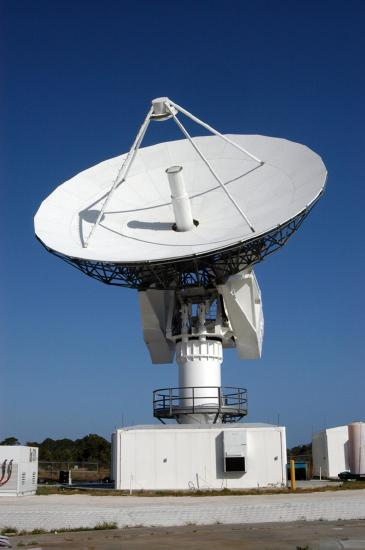
Such a theoretical prediction followed by experimental verification is an indication of the power of science in general, and physics in particular. The underlying connections and unity of physics allow certain great minds to solve puzzles without having all the pieces. The prediction of electromagnetic waves is one of the most spectacular examples of this power. Certain others, such as the prediction of antimatter, will be discussed in later modules.
📖 OpenStax College Physics, Section 24.0. openstax.org · CC BY 4.0
- Restate Maxwell’s equations.
The Scotsman James Clerk Maxwell (1831–1879) is regarded as the greatest theoretical physicist of the 19th century. (See Figure 1.) Although he died young, Maxwell not only formulated a complete electromagnetic theory, represented byMaxwell's equations, he also developed the kinetic theory of gases and made significant contributions to the understanding of color vision and the nature of Saturn’s rings.
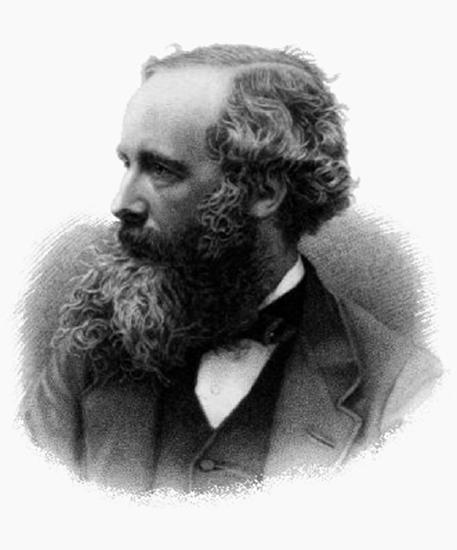
Maxwell brought together all the work that had been done by brilliant physicists such as Oersted, Coulomb, Gauss, and Faraday, and added his own insights to develop the overarching theory of electromagnetism. Maxwell’s equations are paraphrased here in words because their mathematical statement is beyond the level of this text. However, the equations illustrate how apparently simple mathematical statements can elegantly unite and express a multitude of concepts—why mathematics is the language of science.
Maxwell’s equations encompass the major laws of electricity and magnetism. What is not so apparent is the symmetry that Maxwell introduced in his mathematical framework. Especially important is his addition of the hypothesis that changing electric fields create magnetic fields. This is exactly analogous (and symmetric) to Faraday’s law of induction and had been suspected for some time, but fits beautifully into Maxwell’s equations.
Symmetry is apparent in nature in a wide range of situations. In contemporary research, symmetry plays a major part in the search for sub-atomic particles using massive multinational particle accelerators such as the new Large Hadron Collider at CERN.
MAKING CONNECTIONS: UNIFICATION OF FORCES
Maxwell’s complete and symmetric theory showed that electric and magnetic forces are not separate, but different manifestations of the same thing—the electromagnetic force. This classical unification of forces is one motivation for current attempts to unify the four basic forces in nature—the gravitational, electrical, strong, and weak nuclear forces.
Since changing electric fields create relatively weak magnetic fields, they could not be easily detected at the time of Maxwell’s hypothesis. Maxwell realized, however, that oscillating charges, like those in AC circuits, produce changing electric fields. He predicted that these changing fields would propagate from the source like waves generated on a lake by a jumping fish.
The waves predicted by Maxwell would consist of oscillating electric and magnetic fields—defined to be an electromagnetic wave (EM wave). Electromagnetic waves would be capable of exerting forces on charges great distances from their source, and they might thus be detectable. Maxwell calculated that electromagnetic waves would propagate at a speed given by the equation \[c = \frac{1}{\sqrt{\mu_{0}\epsilon_{0}}}.\label{24.2.1}\] When the values for \(\mu_{0}\) and \(\epsilon_{0}\) are entered into the equation for \(c\), we find that \[c = \frac{1}{\sqrt{\left( 8.85 \times 10^{-12} \frac{C^{2}}{N \cdot m^{2}} \right) \left( 4 \pi \times 10^{-7} \frac{T \cdot m}{A} \right)}} = 3.00 \times 10^{8} m/s , \label{24.2.2}\] which is the speed of light. In fact, Maxwell concluded that light is an electromagnetic wave having such wavelengths that it can be detected by the eye.
Other wavelengths should exist—it remained to be seen if they did. If so, Maxwell’s theory and remarkable predictions would be verified, the greatest triumph of physics since Newton. Experimental verification came within a few years, but not before Maxwell’s death.
The German physicist Heinrich Hertz (1857–1894) was the first to generate and detect certain types of electromagnetic waves in the laboratory. Starting in 1887, he performed a series of experiments that not only confirmed the existence of electromagnetic waves, but also verified that they travel at the speed of light.
Hertz used an AC \(RLC\) (resistor-inductor-capacitor) circuit that resonates at a known frequency \(f_{0} = \frac{1}{2 \pi \sqrt{LC}}\) and connected it to a loop of wire as shown in Figure 2. High voltages induced across the gap in the loop produced sparks that were visible evidence of the current in the circuit and that helped generate electromagnetic waves.
Across the laboratory, Hertz had another loop attached to another \(RLC\) circuit, which could be tuned (as the dial on a radio) to the same resonant frequency as the first and could, thus, be made to receive electromagnetic waves. This loop also had a gap across which sparks were generated, giving solid evidence that electromagnetic waves had been received.
![The circuit diagram shows a simple circuit containing an alternating voltage source, a resistor R, capacitor C and a transformer, which provides the impedance. The transformer is shown to consist of two coils separated by a core. In parallel with the transformer is connected a wire loop labeled as Loop one Transmitter with a small gap that creates sparks across the gap. The sparks create electromagnetic waves, which are transmitted through the air to a similar loop next to it labeled as Loop two Receiver. These waves induce sparks in Loop two, and are detected by the tuner shown as a rectangular box connected to it.](images/ch24/fig24-4-the-circuit-diagram-shows-a-simple-circu.jpg)
Hertz also studied the reflection, refraction, and interference patterns of the electromagnetic waves he generated, verifying their wave character. He was able to determine wavelength from the interference patterns, and knowing their frequency, he could calculate the propagation speed using the equation Hertz also studied the reflection, refraction, and interference patterns of the electromagnetic waves he generated, verifying their wave character. He was able to determine wavelength from the interference patterns, and knowing their frequency, he could calculate the propagation speed using the equation \(v = f \lambda\) (velocity—or speed—equals frequency times wavelength). Hertz was thus able to prove that electromagnetic waves travel at the speed of light. The SI unit for frequency, the hertz (\(1 Hz = 1 cycle/sec\)), is named is his honor.
📖 OpenStax College Physics, Section 24.1. openstax.org · CC BY 4.0
- Describe the electric and magnetic waves as they move out from a source, such as an AC generator.
- Explain the mathematical relationship between the magnetic field strength and the electrical field strength.
- Calculate the maximum strength of the magnetic field in an electromagnetic wave, given the maximum electric field strength.
We can get a good understanding ofelectromagnetic waves(EM) by considering how they are produced. Whenever a current varies, associated electric and magnetic fields vary, moving out from the source like waves. Perhaps the easiest situation to visualize is a varying current in a long straight wire, produced by an AC generator at its center, as illustrated in Figure .
![A long straight gray wire with an A C generator at its center, functioning as a broadcast antenna for electromagnetic waves, is shown. The wave distributions at four different times are shown in four different parts. Part a of the diagram shows a long straight gray wire with an A C generator at its center. The time is marked t equals zero. The bottom part of the antenna is positive and the upper end of the antenna is negative. An electric field E acting upward is shown by an upward arrow. Part b of the diagram shows a long straight gray wire with an A C generator at its center. The time is marked t equals capital T divided by four. The antenna has no polarity marked and a wave is shown to emerge from the A C source. An electric field E acting upward as shown by an upward arrow. The electric field E propagates away from the antenna at the speed of light, forming part of the electromagnetic wave from the A C source. A quarter portion of the wave is shown above the horizontal axis. Part c of the diagram shows a long straight gray wire with an A C generator at its center. The time is marked t equals capital T divided by two. The bottom part of the antenna is negative and the upper end of the antenna is positive and a wave is shown to emerge from the A C source. The electric field E propagates away from the antenna at the speed of light, forming part of the electromagnetic wave from the A C source. A quarter portion of the wave is shown below the horizontal axis and a quarter portion of the wave is above the horizontal axis. Part d of the diagram shows a long straight gray wire with an AC generator at its center. The time is marked t equals capital T. The bottom part of the antenna is positive and the upper end of the antenna is negative. A wave is shown to emerge from the A C source. The electric field E propagates away from the antenna at the speed of light, forming part of the electromagnetic wave from the A C source. A quarter portion of the wave is shown above the horizontal axis followed by a half wave below the horizontal axis and then again a quarter of a wave above the horizontal axis.](images/ch24/fig24-5-a-long-straight-gray-wire-with-an-a-c-ge.jpg)
Theelectric field(\(\bf{E}\)) shown surrounding the wire is produced by the charge distribution on the wire. Both the \(\bf{E}\) and the charge distribution vary as the current changes. The changing field propagates outward at the speed of light.
There is an associatedmagnetic field(\(\bf{B}\)) which propagates outward as well (Figure . The electric and magnetic fields are closely related and propagate as an electromagnetic wave. This is what happens in broadcast antennae such as those in radio and TV stations.
Closer examination of the one complete cycle shown in Figure reveals the periodic nature of the generator-driven charges oscillating up and down in the antenna and the electric field produced. At time \(t = 0\), there is the maximum separation of charge, with negative charges at the top and positive charges at the bottom, producing the maximum magnitude of the electric field (or \(E\)-field) in the upward direction. One-fourth of a cycle later, there is no charge separation and the field next to the antenna is zero, while the maximum \(E\)-field has moved away at speed \(c\).
As the process continues, the charge separation reverses and the field reaches its maximum downward value, returns to zero, and rises to its maximum upward value at the end of one complete cycle. The outgoing wave has anamplitudeproportional to the maximum separation of charge. Itswavelength(\(\lambda\)) is proportional to the period of the oscillation and, hence, is smaller for short periods or high frequencies. (As usual, wavelength andfrequency(\(f\)) are inversely proportional.)
Following Ampere’s law, current in the antenna produces a magnetic field, as shown in Figure . The relationship between \(\bf{E}\) and \(\bf{B}\) is shown at one instant in Figure 2a. As the current varies, the magnetic field varies in magnitude and direction.
![Part a of the diagram shows a long straight gray wire with an A C generator at its center, functioning as a broadcast antenna. The antenna has a current I flowing vertically upward. The bottom end of the antenna is negative and the upper end of the antenna is positive. An electric field is shown to act vertically downward. The magnetic field lines B produced in the antenna are circular in direction around the wire. Part b of the diagram shows a long straight gray wire with an A C generator at its center, functioning as a broadcast antenna. The electric field E and magnetic field B near the wire are shown perpendicular to each other. Part c of the diagram shows a long straight gray wire with an A C generator at its center, functioning as a broadcast antenna. The current is shown to flow in the antenna. The magnetic field varies with the current and propagates away from the antenna as a sine wave in the horizontal plane. The vibrations in the wave are marked as small arrows along the wave.](images/ch24/fig24-6-part-a-of-the-diagram-shows-a-long-strai.jpg)
The magnetic field lines also propagate away from the antenna at the speed of light, forming the other part of the electromagnetic wave, as seen in Figure \(\PageIndex{2b}\). The magnetic part of the wave has the same period and wavelength as the electric part, since they are both produced by the same movement and separation of charges in the antenna.
The electric and magnetic waves are shown together at one instant in time in Figure . The electric and magnetic fields produced by a long straight wire antenna are exactly in phase. Note that they are perpendicular to one another and to the direction of propagation, making this atransverse wave.
![A part of the electromagnetic wave sent out from the antenna at one instant in time is shown. The wave is shown with the variation of two components, E and B, moving with velocity c. E is a sine wave in one plane with small arrows showing the vibrations of particles in the plane. B is a sine wave in a plane perpendicular to the E wave. The B wave has arrows to show the vibrations of particles in the plane. The waves are shown intersecting each other at the junction of the planes because E and B are perpendicular to each other. E and B are in phase, and they are perpendicular to one another and to the direction of propagation.](images/ch24/fig24-7-a-part-of-the-electromagnetic-wave-sent-.jpg)
Electromagnetic waves generally propagate out from a source in all directions, sometimes forming a complex radiation pattern. A linear antenna like this one will not radiate parallel to its length, for example. The wave is shown in one direction from the antenna in Figure to illustrate its basic characteristics.
Instead of the AC generator, the antenna can also be driven by an AC circuit. In fact, charges radiate whenever they are accelerated. But while a current in a circuit needs a complete path, an antenna has a varying charge distribution forming astanding wave, driven by the AC. The dimensions of the antenna are critical for determining the frequency of the radiated electromagnetic waves. This is aresonantphenomenon and when we tune radios or TV, we vary electrical properties to achieve appropriate resonant conditions in the antenna.
Electromagnetic waves carry energy away from their source, similar to a sound wave carrying energy away from a standing wave on a guitar string. An antenna for receiving EM signals works in reverse. And like antennas that produce EM waves, receiver antennas are specially designed to resonate at particular frequencies.
An incoming electromagnetic wave accelerates electrons in the antenna, setting up a standing wave. If the radio or TV is switched on, electrical components pick up and amplify the signal formed by the accelerating electrons. The signal is then converted to audio and/or video format. Sometimes big receiver dishes are used to focus the signal onto an antenna.
In fact, charges radiate whenever they are accelerated. When designing circuits, we often assume that energy does not quickly escape AC circuits, and mostly this is true. A broadcast antenna is specially designed to enhance the rate of electromagnetic radiation, and shielding is necessary to keep the radiation close to zero. Some familiar phenomena are based on the production of electromagnetic waves by varying currents. Your microwave oven, for example, sends electromagnetic waves, called microwaves, from a concealed antenna that has an oscillating current imposed on it.
There is a relationship between the \(E\)- and \(B\)- field strengths in an electromagnetic wave. This can be understood by again considering the antenna just described. The stronger the \(E\)-field created by a separation of charge, the greater the current and, hence, the greater the \(B\)-field created.
Since current is directly proportional to voltage (Ohm’s law) and voltage is directly proportional to \(E\)-field strength, the two should be directly proportional. It can be shown that the magnitudes of the fields do have a constant ratio, equal to the speed of light. That is,
is the ratio of \(E\)-field strength to \(B\)-field strength in any electromagnetic wave. This is true at all times and at all locations in space. A simple and elegant result.
What is the maximum strength of the \(B\)-field in an electromagnetic wave that has a maximum \(E\)-field strength of \(1000 V/m\)?
To find the \(B\)-field strength, we rearrange the Equation \ref{24.3.1} to solve for \(B\), yielding
We are given \(E\), and \(c\) is the speed of light. Entering these into the expression for \(B\) yields
Where T stands for Tesla, a measure of magnetic field strength.
The \(B\)-field strength is less than a tenth of the Earth’s admittedly weak magnetic field. This means that a relatively strong electric field of 1000 V/m is accompanied by a relatively weak magnetic field. Note that as this wave spreads out, say with distance from an antenna, its field strengths become progressively weaker.
The result of this example is consistent with the statement made in the module 24.2 that changing electric fields create relatively weak magnetic fields. They can be detected in electromagnetic waves, however, by taking advantage of the phenomenon of resonance, as Hertz did. A system with the same natural frequency as the electromagnetic wave can be made to oscillate. All radio and TV receivers use this principle to pick up and then amplify weak electromagnetic waves, while rejecting all others not at their resonant frequency.
TAKE-HOME EXPERIMENT: ANTENNAS
For your TV or radio at home, identify the antenna, and sketch its shape. If you don’t have cable, you might have an outdoor or indoor TV antenna. Estimate its size. If the TV signal is between 60 and 216 MHz for basic channels, then what is the wavelength of those EM waves?
Try tuning the radio and note the small range of frequencies at which a reasonable signal for that station is received. (This is easier with digital readout.) If you have a car with a radio and extendable antenna, note the quality of reception as the length of the antenna is changed.
PHET EXPLORATIONS: RADIO WAVES AND ELECTROMAGNETIC FIELDS
Broadcast radio waves fromKPhET. Wiggle the transmitter electron manually or have it oscillate automatically. Display the field as a curve or vectors. The strip chart shows the electron positions at the transmitter and at the receiver.
📖 OpenStax College Physics, Section 24.2. openstax.org · CC BY 4.0
- List three “rules of thumb” that apply to the different frequencies along the electromagnetic spectrum.
- Explain why the higher the frequency, the shorter the wavelength of an electromagnetic wave.
- Draw a simplified electromagnetic spectrum, indicating the relative positions, frequencies, and spacing of the different types of radiation bands.
- List and explain the different methods by which electromagnetic waves are produced across the spectrum.
In this module we examine how electromagnetic waves are classified into categories such as radio, infrared, ultraviolet, and so on, so that we can understand some of their similarities as well as some of their differences. We will also find that there are many connections with previously discussed topics, such as wavelength and resonance. A brief overview of the production and utilization of electromagnetic waves is found in Table .
| Type of EM wave | Production | Applications | Life sciences aspect | Issues |
|---|---|---|---|---|
| Radio & TV | Acceleration charges | Communications Remote controls | MRI | Requires controls for band use |
| Microwaves | Accelerating charges & thermal agitation | Communication Ovens Radar | Deep heating | Cell phone use |
| Infrared | Thermal agitations & electronic transitions | Thermal imaging Heating | Absorbed by atmosphere | Greenhouse effect |
| Visible light | Thermal agitations & electronic transitions | All pervasive | Photosynthesis Human vision | |
| Ultraviolet | Thermal agitations & electronic transitions | Sterilization Cancer control | Vitamin D production | Ozone depletion Cancer causing |
| X-rays | Inner electronic transitions and fast collisions | Medical Security | Medical diagnosis Cancer therapy | Cancer causing |
| Gamma rays | Nuclear decay | Nuclear medicineSecurity | Medical diagnosis Cancer therapy | Cancer causing Radiation damage |
There are many types of waves, such as water waves and even earthquakes. Among the many shared attributes of waves are propagation speed, frequency, and wavelength. These are always related by the expression \(v w = f \lambda\). This module concentrates on EM waves, but other modules contain examples of all of these characteristics for sound waves and submicroscopic particles.
As noted before, an electromagnetic wave has a frequency and a wavelength associated with it and travels at the speed of light, or \(c\). The relationship among these wave characteristics can be described by \(vw = f \lambda\), where \(vw\) is the propagation speed of the wave, \(f\) is the frequency, and \(\lambda\) is the wavelength. Here \(vw = c\), so that for all electromagnetic waves,
Thus, for all electromagnetic waves, the greater the frequency, the smaller the wavelength.
Figure shows how the various types of electromagnetic waves are categorized according to their wavelengths and frequencies -- that is, it shows the electromagnetic spectrum. Many of the characteristics of the various types of electromagnetic waves are related to their frequencies and wavelengths, as we shall see.
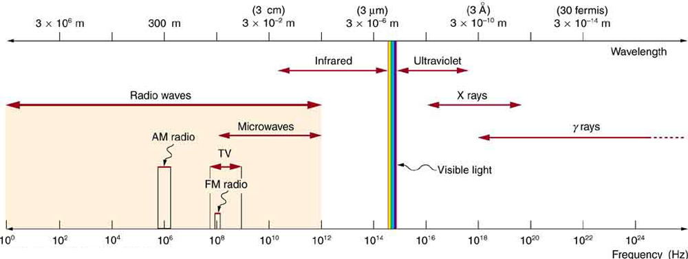
ELECTROMAGNETIC SPECTRUM: RULES OF THUMB
Three rules that apply to electromagnetic waves in general are as follows:
Note that there are exceptions to these rules of thumb.
What happens when an electromagnetic wave impinges on a material? If the material is transparent to the particular frequency, then the wave can largely be transmitted. If the material is opaque to the frequency, then the wave can be totally reflected. The wave can also be absorbed by the material, indicating that there is some interaction between the wave and the material, such as the thermal agitation of molecules.
Of course it is possible to have partial transmission, reflection, and absorption. We normally associate these properties with visible light, but they do apply to all electromagnetic waves. What is not obvious is that something that is transparent to light may be opaque at other frequencies. For example, ordinary glass is transparent to visible light but largely opaque to ultraviolet radiation. Human skin is opaque to visible light -- we cannot see through people -- but transparent to X-rays.
The broad category ofradio wavesis defined to contain any electromagnetic wave produced by currents in wires and circuits. Its name derives from their most common use as a carrier of audio information (i.e., radio). The name is applied to electromagnetic waves of similar frequencies regardless of source. Radio waves from outer space, for example, do not come from alien radio stations. They are created by many astronomical phenomena, and their study has revealed much about nature on the largest scales.
There are many uses for radio waves, and so the category is divided into many subcategories, including microwaves and those electromagnetic waves used for AM and FM radio, cellular telephones, and TV.
The lowest commonly encountered radio frequencies are produced by high-voltage AC power transmission lines at frequencies of 50 or 60 Hz. (Figure . These extremely long wavelength electromagnetic waves (about 6000 km!) are one means of energy loss in long-distance power transmission.
There is an ongoing controversy regarding potential health hazards associated with exposure to these electromagnetic fields (\(E\)-fields). Some people suspect that living near such transmission lines may cause a variety of illnesses, including cancer. But demographic data are either inconclusive or simply do not support the hazard theory. Recent reports that have looked at many European and American epidemiological studies have found no increase in risk for cancer due to exposure to \(E\)-fields.
Extremely low frequency (ELF)radio waves of about 1 kHz are used to communicate with submerged submarines. The ability of radio waves to penetrate salt water is related to their wavelength (much like ultrasound penetrating tissue) -- the longer the wavelength, the farther they penetrate. Since salt water is a good conductor, radio waves are strongly absorbed by it, and very long wavelengths are needed to reach a submarine under the surface. (Figure .
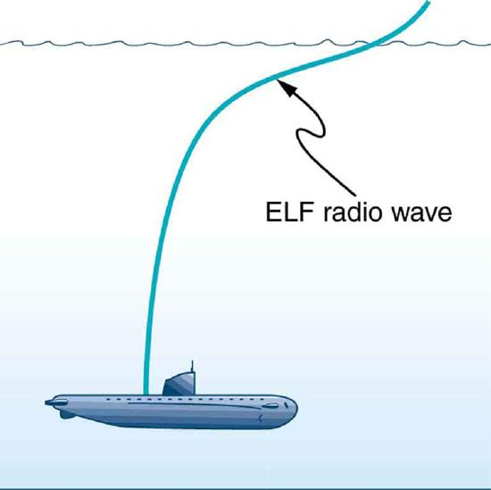
AM radio waves are used to carry commercial radio signals in the frequency range from 540 to 1600 kHz. The abbreviation AM stands foramplitude modulation, which is the method for placing information on these waves (Figure . Acarrier wavehaving the basic frequency of the radio station, say 1530 kHz, is varied or modulated in amplitude by an audio signal. The resulting wave has a constant frequency, but a varying amplitude.
A radio receiver tuned to have the same resonant frequency as the carrier wave can pick up the signal, while rejecting the many other frequencies impinging on its antenna. The receiver’s circuitry is designed to respond to variations in amplitude of the carrier wave to replicate the original audio signal. That audio signal is amplified to drive a speaker or perhaps to be recorded.
![Part a of the diagram shows a carrier wave along the horizontal axis. The wave is shown to have a high frequency as the vibrations are closely spaced. The wave has constant amplitude represented by uniform height of crest and trough. Part b of the diagram shows an audio wave with a lower frequency. The wave is on the upper side of horizontal axis. The amplitude of the wave is not uniform. It has an initial small rise and fall followed by a steep rise and a gradual fall in the wave. Part c of the diagram shows the amplitude modulated wave. It is the resultant wave obtained by mixing of the waves in part a and part b. The amplitude of the resultant wave is non uniform, similar to the audio wave. The frequency of the amplitude modulated wave is equal to the frequency of the carrier wave. The wave spreads on both sides of the horizontal axis.](images/ch24/fig24-11-part-a-of-the-diagram-shows-a-carrier-wa.jpg)
FM radio waves are also used for commercial radio transmission, but in the frequency range of 88 to 108 MHz. FM stands forfrequency modulation, another method of carrying information (Figure . Here a carrier wave having the basic frequency of the radio station, perhaps 105.1 MHz, is modulated in frequency by the audio signal, producing a wave of constant amplitude but varying frequency.
![Part a of the diagram shows a carrier wave along the horizontal axis. The wave is shown to have a high frequency as the vibrations are closely spaced. The wave has constant amplitude represented by uniform height of crest and trough. Part b of the diagram shows an audio wave with a lower frequency as shown by widely spaced vibrations. The wave has constant amplitude, represented by uniform length of crest and trough. Part c shows the frequency modulated wave obtained from waves in part a and part b. The amplitude of the resultant wave is similar to the source waves but the frequency varies. Frequency maxima are shown as closely spaced vibrations and frequency minima are shown as widely spaced vibrations. These maxima and minima are shown to alternate.](images/ch24/fig24-12-part-a-of-the-diagram-shows-a-carrier-wa.jpg)
Since audible frequencies range up to 20 kHz (or 0.020 MHz) at most, the frequency of the FM radio wave can vary from the carrier by as much as 0.020 MHz. Thus the carrier frequencies of two different radio stations cannot be closer than 0.020 MHz. An FM receiver is tuned to resonate at the carrier frequency and has circuitry that responds to variations in frequency, reproducing the audio information.
FM radio is inherently less subject to noise from stray radio sources than AM radio. The reason is that amplitudes of waves add. So an AM receiver would interpret noise added onto the amplitude of its carrier wave as part of the information. An FM receiver can be made to reject amplitudes other than that of the basic carrier wave and only look for variations in frequency. It is thus easier to reject noise from FM, since noise produces a variation in amplitude.
Televisionis also broadcast on electromagnetic waves. Since the waves must carry a great deal of visual as well as audio information, each channel requires a larger range of frequencies than simple radio transmission. TV channels utilize frequencies in the range of 54 to 88 MHz and 174 to 222 MHz. (The entire FM radio band lies between channels 88 MHz and 174 MHz.) These TV channels are called VHF (forvery high frequency). Other channels called UHF (forultra high frequency) utilize an even higher frequency range of 470 to 1000 MHz.
The TV video signal is AM, while the TV audio is FM. Note that these frequencies are those of free transmission with the user utilizing an old-fashioned roof antenna. Satellite dishes and cable transmission of TV occurs at significantly higher frequencies and is rapidly evolving with the use of the high-definition or HD format.
Calculate the wavelengths of a 1530-kHz AM radio signal, a 105.1-MHz FM radio signal, and a 1.90-GHz cell phone signal.
The relationship between wavelength and frequency is \(c = f \lambda\), where \(c = 3.00 \times 10^{8} m/s\) is the speed of light (the speed of light is only very slightly smaller in air than it is in a vacuum). We can rearrange this equation to find the wavelength for all three frequencies.
Rearranging gives \[\lambda = \frac{c}{f}.\]
These wavelengths are consistent with the spectrum in Figure . The wavelengths are also related to other properties of these electromagnetic waves, as we shall see.
The wavelengths found in the preceding example are representative of AM, FM, and cell phones, and account for some of the differences in how they are broadcast and how well they travel. The most efficient length for a linear antenna, such as discussed in 24.3, is \(\lambda / 2\), half the wavelength of the electromagnetic wave. Thus a very large antenna is needed to efficiently broadcast typical AM radio with its carrier wavelengths on the order of hundreds of meters.
One benefit to these long AM wavelengths is that they can go over and around rather large obstacles (like buildings and hills), just as ocean waves can go around large rocks. FM and TV are best received when there is a line of sight between the broadcast antenna and receiver, and they are often sent from very tall structures. FM, TV, and mobile phone antennas themselves are much smaller than those used for AM, but they are elevated to achieve an unobstructed line of sight (Figure .
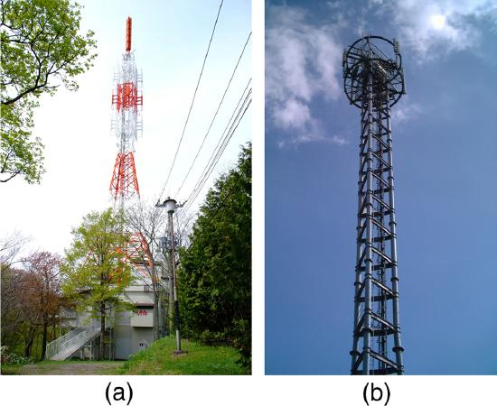
Astronomers and astrophysicists collect signals from outer space using electromagnetic waves. A common problem for astrophysicists is the “pollution” from electromagnetic radiation pervading our surroundings from communication systems in general. Even everyday gadgets like our car keys having the facility to lock car doors remotely and being able to turn TVs on and off using remotes involve radio-wave frequencies. In order to prevent interference between all these electromagnetic signals, strict regulations are drawn up for different organizations to utilize different radio frequency bands.
One reason why we are sometimes asked to switch off our mobile phones (operating in the range of 1.9 GHz) on airplanes and in hospitals is that important communications or medical equipment often uses similar radio frequencies and their operation can be affected by frequencies used in the communication devices.
For example, radio waves used in magnetic resonance imaging (MRI) have frequencies on the order of 100 MHz, although this varies significantly depending on the strength of the magnetic field used and the nuclear type being scanned. MRI is an important medical imaging and research tool, producing highly detailed two- and three-dimensional images. Radio waves are broadcast, absorbed, and reemitted in a resonance process that is sensitive to the density of nuclei (usually protons or hydrogen nuclei).
The wavelength of 100-MHz radio waves is 3 m, yet using the sensitivity of the resonant frequency to the magnetic field strength, details smaller than a millimeter can be imaged. This is a good example of an exception to a rule of thumb (in this case, the rubric that details much smaller than the probe’s wavelength cannot be detected). The intensity of the radio waves used in MRI presents little or no hazard to human health.
Microwavesare the highest-frequency electromagnetic waves that can be produced by currents in macroscopic circuits and devices. Microwave frequencies range from about \(10^{9} Hz\) to the highest practical \(LC\) resonance at nearly \(10^{12} Hz\). Since they have high frequencies, their wavelengths are short compared with those of other radio waves -- hence the name "microwave."
Microwaves can also be produced by atoms and molecules. They are, for example, a component of electromagnetic radiation generated bythermal agitation.The thermal motion of atoms and molecules in any object at a temperature above absolute zero causes them to emit and absorb radiation.
Since it is possible to carry more information per unit time on high frequencies, microwaves are quite suitable for communications. Most satellite-transmitted information is carried on microwaves, as are land-based long-distance transmissions. A clear line of sight between transmitter and receiver is needed because of the short wavelengths involved.
Radaris a common application of microwaves that was first developed in World War II. By detecting and timing microwave echoes, radar systems can determine the distance to objects as diverse as clouds and aircraft. A Doppler shift in the radar echo can be used to determine the speed of a car or the intensity of a rainstorm. Sophisticated radar systems are used to map the Earth and other planets, with a resolution limited by wavelength. (Figure . The shorter the wavelength of any probe, the smaller the detail it is possible to observe.
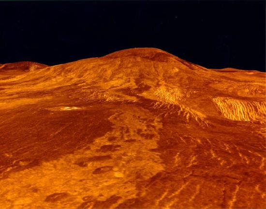
How does the ubiquitous microwave oven produce microwaves electronically, and why does food absorb them preferentially? Microwaves at a frequency of 2.45 GHz are produced by accelerating electrons. The microwaves are then used to induce an alternating electric field in the oven.
Water and some other constituents of food have a slightly negative charge at one end and a slightly positive charge at one end (called polar molecules). The range of microwave frequencies is specially selected so that the polar molecules, in trying to keep orienting themselves with the electric field, absorb these energies and increase their temperatures -- called dielectric heating.
The energy thereby absorbed results in thermal agitation heating food and not the plate, which does not contain water. Hot spots in the food are related to constructive and destructive interference patterns. Rotating antennas and food turntables help spread out the hot spots.
Another use of microwaves for heating is within the human body. Microwaves will penetrate more than shorter wavelengths into tissue and so can accomplish “deep heating” (called microwave diathermy). This is used for treating muscular pains, spasms, tendonitis, and rheumatoid arthritis.
MAKING CONNECTIONS: TAKE-HOME EXPERIMENT - MICROWAVE OVENS
Microwaves generated by atoms and molecules far away in time and space can be received and detected by electronic circuits. Deep space acts like a blackbody with a 2.7 K temperature, radiating most of its energy in the microwave frequency range. In 1964, Penzias and Wilson detected this radiation and eventually recognized that it was the radiation of the Big Bang’s cooled remnants.
The microwave and infrared regions of the electromagnetic spectrum overlap (Figure .Infrared radiationis generally produced by thermal motion and the vibration and rotation of atoms and molecules. Electronic transitions in atoms and molecules can also produce infrared radiation.
The range of infrared frequencies extends up to the lower limit of visible light, just below red. In fact, infrared means “below red.” Frequencies at its upper limit are too high to be produced by accelerating electrons in circuits, but small systems, such as atoms and molecules, can vibrate fast enough to produce these waves.
Water molecules rotate and vibrate particularly well at infrared frequencies, emitting and absorbing them so efficiently that the emissivity for skin is \(e = 0.97\) in the infrared. Night-vision scopes can detect the infrared emitted by various warm objects, including humans, and convert it to visible light.
We can examine radiant heat transfer from a house by using a camera capable of detecting infrared radiation. Reconnaissance satellites can detect buildings, vehicles, and even individual humans by their infrared emissions, whose power radiation is proportional to the fourth power of the absolute temperature. More mundanely, we use infrared lamps, some of which are called quartz heaters, to preferentially warm us because we absorb infrared better than our surroundings.
The Sun radiates like a nearly perfect blackbody (that is, it has \(e = 1\)), with a 6000 K surface temperature. About half of the solar energy arriving at the Earth is in the infrared region, with most of the rest in the visible part of the spectrum, and a relatively small amount in the ultraviolet. On average, 50 percent of the incident solar energy is absorbed by the Earth.
The relatively constant temperature of the Earth is a result of the energy balance between the incoming solar radiation and the energy radiated from the Earth. Most of the infrared radiation emitted from the Earth is absorbed by \(CO_{2}\) and \(H_{2}O\) in the atmosphere and then radiated back to Earth or into outer space. This radiation back to Earth is known as the greenhouse effect, and it maintains the surface temperature of the Earth about \(40^{\circ}C\) higher than it would be if there is no absorption. Some scientists think that the increased concentration of \(CO_{2}\) and other greenhouse gases in the atmosphere, resulting from increases in fossil fuel burning, has increased global average temperatures.
Visible lightis the narrow segment of the electromagnetic spectrum to which the normal human eye responds. Visible light is produced by vibrations and rotations of atoms and molecules, as well as by electronic transitions within atoms and molecules. The receivers or detectors of light largely utilize electronic transitions. We say the atoms and molecules are excited when they absorb and relax when they emit through electronic transitions.
Figure shows this part of the spectrum, together with the colors associated with particular pure wavelengths. We usually refer to visible light as having wavelengths of between 400 nm and 750 nm. (The retina of the eye actually responds to the lowest ultraviolet frequencies, but these do not normally reach the retina because they are absorbed by the cornea and lens of the eye.)
Red light has the lowest frequencies and longest wavelengths, while violet has the highest frequencies and shortest wavelengths. Blackbody radiation from the Sun peaks in the visible part of the spectrum but is more intense in the red than in the violet, making the Sun yellowish in appearance.
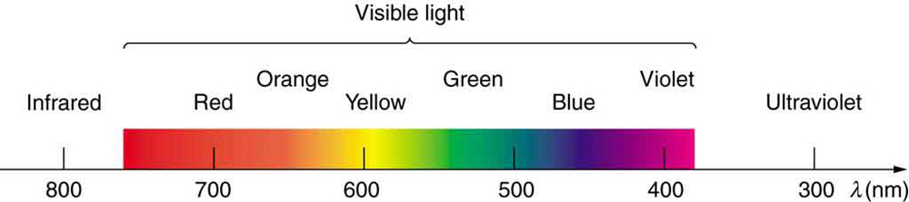
Living things--plants and animals-- have evolved to utilize and respond to parts of the electromagnetic spectrum they are embedded in. Visible light is the most predominant and we enjoy the beauty of nature through visible light. Plants are more selective. Photosynthesis makes use of parts of the visible spectrum to make sugars.
During laser vision correction, a brief burst of 193-nm ultraviolet light is projected onto the cornea of a patient. It makes a spot 0.80 mm in diameter and evaporates a layer of cornea \(0.30 \mu m\) thick. Calculate the energy absorbed, assuming the corneal tissue has the same properties as water; it is initially at \(34^{\circ}C\). Assume the evaporated tissue leaves at a temperature of \(100^{\circ} C\).
The energy from the laser light goes toward raising the temperature of the tissue and also toward evaporating it. Thus we have two amounts of heat to add together. Also, we need to find the mass of corneal tissue involved.
To figure out the heat required to raise the temperature of the tissue to \(100^{\circ}C\), we can apply concepts of thermal energy. We know that
where Q is the heat required to raise the temperature, \(\Delta T\) is the desired change in temperature, \(m\) is the mass of tissue to be heated, and \(c\) is the specific heat of water equal to 4186 J/kg/K.
Without knowing the mass \(m\) at this point, we have
The latent heat of vaporization of water is 2256 kJ/kg, so that the energy needed to evaporate mass \(m\) is
To find the mass \(m\), we use the equation \(\rho = m/V\), where \(\rho\) is the density of the tissue and \(V\) is its volume. For this case,
Therefore, the total energy absorbed by the tissue in the eye is the sum of \(Q\) and \(Q_{v}\):
The lasers used for this eye surgery are excimer lasers, whose light is well absorbed by biological tissue. They evaporate rather than burn the tissue, and can be used for precision work. Most lasers used for this type of eye surgery have an average power rating of about one watt. For our example, if we assume that each laser burst from this pulsed laser lasts for 10 ns, and there are 400 bursts per second, then the average power is
Optics is the study of the behavior of visible light and other forms of electromagnetic waves. Optics falls into two distinct categories. When electromagnetic radiation, such as visible light, interacts with objects that are large compared with its wavelength, its motion can be represented by straight lines like rays. Ray optics is the study of such situations and includes lenses and mirrors.
When electromagnetic radiation interacts with objects about the same size as the wavelength or smaller, its wave nature becomes apparent. For example, observable detail is limited by the wavelength, and so visible light can never detect individual atoms, because they are so much smaller than its wavelength. Physical or wave optics is the study of such situations and includes all wave characteristics.
TAKE-HOME EXPERIMENT: COLORS THAT MATCH
When you light a match you see largely orange light; when you light a gas stove you see blue light. Why are the colors different? What other colors are present in these?
Ultraviolet means “above violet.” The electromagnetic frequencies ofultraviolet radiation (UV)extend upward from violet, the highest-frequency visible light. Ultraviolet is also produced by atomic and molecular motions and electronic transitions. The wavelengths of ultraviolet extend from 400 nm down to about 10 nm at its highest frequencies, which overlap with the lowest X-ray frequencies. It was recognized as early as 1801 by Johann Ritter that the solar spectrum had an invisible component beyond the violet range.
Solar UV radiation is broadly subdivided into three regions: UV-A (320–400 nm), UV-B (290–320 nm), and UV-C (220–290 nm), ranked from long to shorter wavelengths (from smaller to larger energies). Most UV-B and all UV-C is absorbed by ozone (\(O_{3}\)) molecules in the upper atmosphere. Consequently, 99% of the solar UV radiation reaching the Earth’s surface is UV-A.
It is largely exposure to UV-B that causes skin cancer. It is estimated that as many as 20% of adults will develop skin cancer over the course of their lifetime. Again, treatment is often successful if caught early. Despite very little UV-B reaching the Earth’s surface, there are substantial increases in skin-cancer rates in countries such as Australia, indicating how important it is that UV-B and UV-C continue to be absorbed by the upper atmosphere.
All UV radiation can damage collagen fibers, resulting in an acceleration of the aging process of skin and the formation of wrinkles. Because there is so little UV-B and UV-C reaching the Earth’s surface, sunburn is caused by large exposures, and skin cancer from repeated exposure. Some studies indicate a link between overexposure to the Sun when young and melanoma later in life.
The tanning response is a defense mechanism in which the body produces pigments to absorb future exposures in inert skin layers above living cells. Basically UV-B radiation excites DNA molecules, distorting the DNA helix, leading to mutations and the possible formation of cancerous cells.
Repeated exposure to UV-B may also lead to the formation of cataracts in the eyes -- a cause of blindness among people living in the equatorial belt where medical treatment is limited. Cataracts, clouding in the eye’s lens and a loss of vision, are age related; 60% of those between the ages of 65 and 74 will develop cataracts. However, treatment is easy and successful, as one replaces the lens of the eye with a plastic lens. Prevention is important. Eye protection from UV is more effective with plastic sunglasses than those made of glass.
A major acute effect of extreme UV exposure is the suppression of the immune system, both locally and throughout the body.
Low-intensity ultraviolet is used to sterilize haircutting implements, implying that the energy associated with ultraviolet is deposited in a manner different from lower-frequency electromagnetic waves. (Actually this is true for all electromagnetic waves with frequencies greater than visible light.)
Flash photography is generally not allowed of precious artworks and colored prints because the UV radiation from the flash can cause photo-degradation in the artworks. Often artworks will have an extra-thick layer of glass in front of them, which is especially designed to absorb UV radiation.
If all of the Sun’s ultraviolet radiation reached the Earth’s surface, there would be extremely grave effects on the biosphere from the severe cell damage it causes. However, the layer of ozone (\(O_{3}\)) in our upper atmosphere (10 to 50 km above the Earth) protects life by absorbing most of the dangerous UV radiation.
Unfortunately, today we are observing a depletion in ozone concentrations in the upper atmosphere. This depletion has led to the formation of an “ozone hole” in the upper atmosphere. The hole is more centered over the southern hemisphere, and changes with the seasons, being largest in the spring. This depletion is attributed to the breakdown of ozone molecules by refrigerant gases called chlorofluorocarbons (CFCs).
The UV radiation helps dissociate the CFC’s, releasing highly reactive chlorine (Cl) atoms, which catalyze the destruction of the ozone layer. For example, the reaction of \(CFCl_{3}\) with a photon of light (\(hv\)) can be written as:
The Cl atom then catalyzes the breakdown of ozone as follows:
and \[ \ce{ ClO + O_3 \rightarrow Cl + 2O_2} .\label{24.4.6}\]
A single chlorine atom could destroy ozone molecules for up to two years before being transported down to the surface. The CFCs are relatively stable and will contribute to ozone depletion for years to come. CFCs are found in refrigerants, air conditioning systems, foams, and aerosols.
International concern over this problem led to the establishment of the “Montreal Protocol” agreement (1987) to phase out CFC production in most countries. However, developing-country participation is needed if worldwide production and elimination of CFCs is to be achieved. Probably the largest contributor to CFC emissions today is India. But the protocol seems to be working, as there are signs of an ozone recovery (Figure .
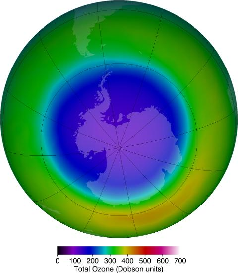
Besides the adverse effects of ultraviolet radiation, there are also benefits of exposure in nature and uses in technology.Vitamin Dproduction in the skin (epidermis) results from exposure to UVB radiation, generally from sunlight. A number of studies indicate lack of vitamin D can result in the development of a range of cancers (prostate, breast, colon), so a certain amount of UV exposure is helpful. Lack of vitamin D is also linked to osteoporosis. Exposures (with no sunscreen) of 10 minutes a day to arms, face, and legs might be sufficient to provide the accepted dietary level. However, in the winter time north of about \(37 ^{\circ}\) latitude, most UVB gets blocked by the atmosphere.
UV radiation is used in the treatment of infantile jaundice and in some skin conditions. It is also used in sterilizing workspaces and tools, and killing germs in a wide range of applications. It is also used as an analytical tool to identify substances.
When exposed to ultraviolet, some substances, such as minerals, glow in characteristic visible wavelengths, a process called fluorescence. So-called black lights emit ultraviolet to cause posters and clothing to fluoresce in the visible. Ultraviolet is also used in special microscopes to detect details smaller than those observable with longer-wavelength visible-light microscopes.
THINGS GREAT AND SMALL: A SUBMICROSCOPIC VIEW OF X-RAY PRODUCTION
X-rays can be created in a high-voltage discharge. They are emitted in the material struck by electrons in the discharge current. There are two mechanisms by which the electrons create X-rays.
The first method is illustrated in the Figure . An electron is accelerated in an evacuated tube by a high positive voltage. The electron strikes a metal plate (e.g., copper) and produces X-rays. Since this is a high-voltage discharge, the electron gains sufficient energy to ionize the atom.
![An atom is shown. The nucleus is in the center as a cluster of small spheres packed together. Four electron orbits are shown around the nucleus. The one close to the nucleus is circular. All the other orbits are elliptical in nature and inclined at various angles. An electron, represented as a tiny sphere, is shown to strike the atom. An electron is shown knocked out from the closest orbit. A second image of the same atom illustrates another electron striking innermost orbit; a wavy red arrow representing an x ray is shooting away from the innermost orbit.](images/ch24/fig24-17-an-atom-is-shown-the-nucleus-is-in-the-c.png)
In the case shown, an inner-shell electron (one in an orbit relatively close to and tightly bound to the nucleus) is ejected. A short time later, another electron is captured and falls into the orbit in a single great plunge. The energy released by this fall is given to an EM wave known as an X-ray. Since the orbits of the atom are unique to the type of atom, the energy of the X-ray is characteristic of the atom, hence the name characteristic X-ray.
The second method by which an energetic electron creates an X-ray when it strikes a material is illustrated in the figure below. The electron interacts with charges in the material as it penetrates. These collisions transfer kinetic energy from the electron to the electrons and atoms in the material.
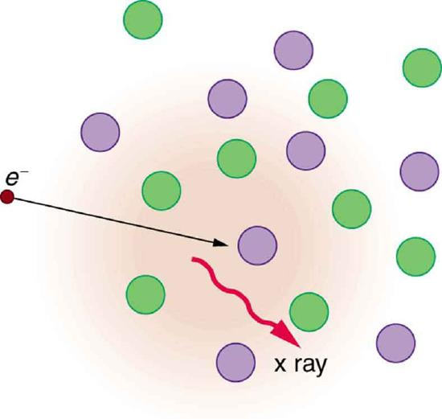
A loss of kinetic energy implies an acceleration, in this case decreasing the electron’s velocity. Whenever a charge is accelerated, it radiates EM waves. Given the high energy of the electron, these EM waves can have high energy. We call them X-rays. Since the process is random, a broad spectrum of X-ray energy is emitted that is more characteristic of the electron energy than the type of material the electron encounters. Such EM radiation is called “bremsstrahlung” (German for “braking radiation”).
In the 1850s, scientists (such as Faraday) began experimenting with high-voltage electrical discharges in tubes filled with rarefied gases. It was later found that these discharges created an invisible, penetrating form of very high frequency electromagnetic radiation. This radiation was called anX-ray, because its identity and nature were unknown.
As described in "Things Great and Small," there are two methods by which X-rays are created --both are submicroscopic processes and can be caused by high-voltage discharges. While the low-frequency end of the X-ray range overlaps with the ultraviolet, X-rays extend to much higher frequencies (and energies).
X-rays have adverse effects on living cells similar to those of ultraviolet radiation, and they have the additional liability of being more penetrating, affecting more than the surface layers of cells. Cancer and genetic defects can be induced by exposure to X-rays. Because of their effect on rapidly dividing cells, X-rays can also be used to treat and even cure cancer.
The widest use of X-rays is for imaging objects that are opaque to visible light, such as the human body or aircraft parts. In humans, the risk of cell damage is weighed carefully against the benefit of the diagnostic information obtained. However, questions have risen in recent years as to accidental overexposure of some people during CT scans --a mistake at least in part due to poor monitoring of radiation dose.
The ability of X-rays to penetrate matter depends on density, and so an X-ray image can reveal very detailed density information. Figure shows an example of the simplest type of X-ray image, an X-ray shadow on film. The amount of information in a simple X-ray image is impressive, but more sophisticated techniques, such as CT scans, can reveal three-dimensional information with details smaller than a millimeter.
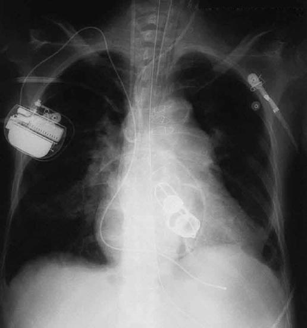
The use of X-ray technology in medicine is called radiology -- an established and relatively cheap tool in comparison to more sophisticated technologies. Consequently, X-rays are widely available and used extensively in medical diagnostics. During World War I, mobile X-ray units, advocated by Madame Marie Curie, were used to diagnose soldiers.
Because they can have wavelengths less than 0.01 nm, X-rays can be scattered (a process called X-ray diffraction) to detect the shape of molecules and the structure of crystals. X-ray diffraction was crucial to Crick, Watson, and Wilkins in the determination of the shape of the double-helix DNA molecule.
X-rays are also used as a precise tool for trace-metal analysis in X-ray induced fluorescence, in which the energy of the X-ray emissions are related to the specific types of elements and amounts of materials present.
Soon after nuclear radioactivity was first detected in 1896, it was found that at least three distinct types of radiation were being emitted. The most penetrating nuclear radiation was calleda gamma ray( \(\gamma\) ray) (again a name given because its identity and character were unknown), and it was later found to be an extremely high frequency electromagnetic wave.
In fact, \(\gamma\) rays are any electromagnetic radiation emitted by a nucleus. This can be from natural nuclear decay or induced nuclear processes in nuclear reactors and weapons. The lower end of the\(\gamma\)-rayfrequency range overlaps the upper end of the X-ray range, but \(\gamma\) rays can have the highest frequency of any electromagnetic radiation.
Gamma rays have characteristics identical to X-rays of the same frequency -- they differ only in source. At higher frequencies, \(\gamma\) rays are more penetrating and more damaging to living tissue. They have many of the same uses as X-rays, including cancer therapy. Gamma radiation from radioactive materials is used in nuclear medicine.
Figure 13 shows a medical image based on \(\gamma\) rays. Food spoilage can be greatly inhibited by exposing it to large doses of \(\gamma\) radiation, thereby obliterating responsible microorganisms. Damage to food cells through irradiation occurs as well, and the long-term hazards of consuming radiation-preserved food are unknown and controversial for some groups. Both X-ray and\(\gamma\)-raytechnologies are also used in scanning luggage at airports.
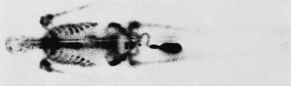
A final note on star gazing. The entire electromagnetic spectrum is used by researchers for investigating stars, space, and time. As noted earlier, Penzias and Wilson detected microwaves to identify the background radiation originating from the Big Bang. Radio telescopes such as the Arecibo Radio Telescope in Puerto Rico and Parkes Observatory in Australia were designed to detect radio waves.
Infrared telescopes need to have their detectors cooled by liquid nitrogen to be able to gather useful signals. Since infrared radiation is predominantly from thermal agitation, if the detectors were not cooled, the vibrations of the molecules in the antenna would be stronger than the signal being collected.
The most famous of these infrared sensitive telescopes is the James Clerk Maxwell Telescope in Hawaii. The earliest telescopes, developed in the seventeenth century, were optical telescopes, collecting visible light. Telescopes in the ultraviolet, X-ray, and \(\gamma\)-ray regions are placed outside the atmosphere on satellites orbiting the Earth.
The Hubble Space Telescope (launched in 1990) gathers ultraviolet radiation as well as visible light. In the X-ray region, there is the Chandra X-ray Observatory (launched in 1999), and in the \(\gamma\)-ray region, there is the new Fermi Gamma-ray Space Telescope (launched in 2008—taking the place of the Compton Gamma Ray Observatory, 1991–2000.).
PHET EXPLORATIONS: COLOR VISION
Make a whole rainbow by mixing red, green, and blue light. Change the wavelength of a monochromatic beam or filter white light. View the light as a solid beam, or see the individual photons.
📖 OpenStax College Physics, Section 24.3. openstax.org · CC BY 4.0
- Explain how the energy and amplitude of an electromagnetic wave are related.
- Given its power output and the heating area, calculate the intensity of a microwave oven’s electromagnetic field, as well as its peak electric and magnetic field strengths
Anyone who has used a microwave oven knows there is energy inelectromagnetic waves. Sometimes this energy is obvious, such as in the warmth of the summer sun. Other times it is subtle, such as the unfelt energy of gamma rays, which can destroy living cells.
Electromagnetic waves can bring energy into a system by virtue of theirelectric and magnetic fields. These fields can exert forces and move charges in the system and, thus, do work on them. If the frequency of the electromagnetic wave is the same as the natural frequencies of the system (such as microwaves at the resonant frequency of water molecules), the transfer of energy is much more efficient.
CONNECTIONS: WAVES AND PARTICLES
The behavior of electromagnetic radiation clearly exhibits wave characteristics. But we shall find in later modules that at high frequencies, electromagnetic radiation also exhibits particle characteristics. These particle characteristics will be used to explain more of the properties of the electromagnetic spectrum and to introduce the formal study of modern physics.
Another startling discovery of modern physics is that particles, such as electrons and protons, exhibit wave characteristics. This simultaneous sharing of wave and particle properties for all submicroscopic entities is one of the great symmetries in nature.
![The propagation of two electromagnetic waves is shown in three dimensional planes. The first wave shows with the variation of two components E and B. E is a sine wave in one plane with small arrows showing the vibrations of particles in the plane. B is a sine wave in a plane perpendicular to the E wave. The B wave has arrows to show the vibrations of particles in the plane. The waves are shown intersecting each other at the junction of the planes because E and B are perpendicular to each other. The direction of propagation of wave is shown perpendicular to E and B waves. The energy carried is given as E sub u. The second wave shows with the variation of the components two E and two B, that is, E and B waves with double the amplitude of the first case. Two E is a sine wave in one plane with small arrows showing the vibrations of particles in the plane. Two B is a sine wave in a plane perpendicular to the two E wave. The two B wave has arrows to show the vibrations of particles in the plane. The waves are shown intersecting each other at the junction of the planes because two E and two B waves are perpendicular to each other. The direction of propagation of wave is shown perpendicular to two E and two B waves. The energy carried is given as four E sub u.](images/ch24/fig24-21-the-propagation-of-two-electromagnetic-w.jpg)
But there is energy in an electromagnetic wave, whether it is absorbed or not. Once created, the fields carry energy away from a source. If absorbed, the field strengths are diminished and anything left travels on. Clearly, the larger the strength of the electric and magnetic fields, the more work they can do and the greater the energy the electromagnetic wave carries.
A wave’s energy is proportional to itsamplitudesquared (\(E^{2}\) or \(B^{2}\)). This is true for waves on guitar strings, for water waves, and for sound waves, where amplitude is proportional to pressure. In electromagnetic waves, the amplitude is themaximum field strengthof the electrical and magnetic fields. (See Figure 1.)
Thus the energy carried and theintensity\(I\) of an electromagnetic wave is proportional to \(E^{2}\) and \(B^{2}\). In fact, for a continuous sinusoidal electromagnetic wave, the average intensity \[I_{ave} = \frac{c \epsilon_{0} E_{0}^{2}}{2},\label{24.5.1}\] where \(c\) is the speed of light, \(\epsilon_{0}\) is the permittivity of free space, and \(E_{0}\) is the maximum electric field strength; intensity, as always, is power per unit area (here in \(W/m^{2}\)).
The average intensity of an electromagnetic wave \(I_{ave}\) can also be expressed in terms of the magnetic field strength by using the relationship \(B = E/c\), and the fact that \(\epsilon_{0} = 1/ \mu_{0} c^{2}\), where \(\mu_{0}\) is the permeability of free space. Algebraic manipulation produces the relationship \[I_{ave} = \frac{cB_{0}^{2}}{2 \mu_{0}}, \label{24.5.2}\] where \(B_{0}\) is the maximum magnetic field strength.
One more expression for \(I_{ave}\) in terms of both electric and magnetic field strengths is useful. Substituting the fact that \(c \cdot B_{0} = E_{0}\), the previous expressions becomes \[I_{ave} = \frac{E_{0} B_{0}}{2 \mu_{0}} . \label{24.5.3}\] Whichever of the three preceding equations is most convenient can be used, since they are really just different versions of the same principle: Energy in a wave is related to amplitude squared. Furthermore, since these equations are based on the assumption that the electromagnetic waves are sinusoidal, peak intensity is twice the average; that is, \(I_{0} = 2I_{ave}\).
On its highest power setting, a certain microwave oven projects 1.00 kW of microwaves onto a 30.0 by 40.0 cm area. (a) What is the intensity in \(W/m^{2}\)? (b) Calculate the peak electric field strength \(E_{0}\) in these waves. (c) What is the peak magnetic field strength \(B_{0}\)?
In part (a), we can find intensity from its definition as power per unit area. Once the intensity is known, we can use the equations below to find the field strengths asked for in parts (b) and (c).
Entering the given power into the definition of intensity, and noting the area is 0.300 by 0.400 m, yields \[I = \frac{P}{A} = \frac{1.00 kW}{0.300 m \times 0.400 m}.\] Here \(I = I_{ave}\), so that \[I_{ave} = \frac{1000 W}{0.120 m^{2}} = 8.33 \times 10^{3} W/m^{2}.\] Note that the peak intensity is twice the average: \[I_{0} = 2I_{ave} = 1.67 \times 10^{4} W/m^{2}.\]
To find \(E_{0}\), we can rearrange the first equation given above for \(I_{ave}\) to give \[E_{0} = \left( \frac{2I_{ave}}{c \epsilon_{0}} \right) ^{1/2} .\] Entering known values gives \[E_{0} = \sqrt{\frac{ 2 \left( 8.33 \times 10^{3} W/m^{2} \right) }{ \left( 3.00 \times 10^{8} m/s \right) \left( 8.85 \times 10^{-12} C^{2} / N \cdot m^{2} \right) }}\] \[= 2.51 \times 10^{3} V/m.\]
Perhaps the easiest way to find magnetic field strength, now that the electric field strength is known, is to use the relationship given by \[B_{0} = \frac{E_{0}}{c}.\] Entering known values gives \[B_{0} = \frac{2.51 \times 10^{3} V/m}{3.0 \times 10^{8} m/s}\] \[= 8.35 \times 10^{-6} T\]
As before, a relatively strong electric field is accompanied by a relatively weak magnetic field in an electromagnetic wave, since \(B = E/c\), and \(c\) is a large number.
📖 OpenStax College Physics, Section 24.4. openstax.org · CC BY 4.0
| Section | Title |
|---|---|
| 24.0 | 24.0: Prelude to Electromagnetic Waves |
| 24.1 | 24.1: Maxwell’s Equations- Electromagnetic Waves Predicted and Observed |
| 24.2 | 24.2: Production of Electromagnetic Waves |
| 24.3 | 24.3: The Electromagnetic Spectrum |
| 24.4 | 24.4: Energy in Electromagnetic Waves |